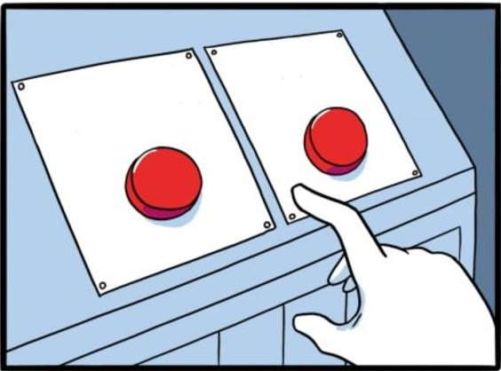
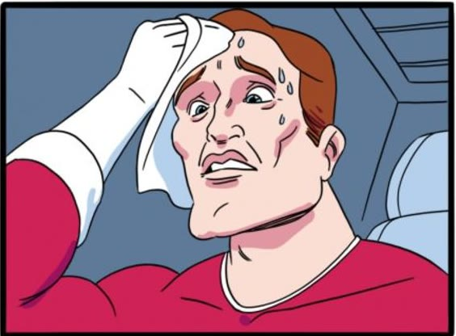

Só pela empresa
Você usa pelo serviço da empresa que fez o modelo.
- Claude (Anthropic)
- GPT (OpenAI)
- Gemini (Google)
[ DIA 1 ]
Um prompt descreve o sistema e a IA decide o resto.
[ TOKENS ]
O texto é fatiado em tokens
[ MÃO NA MASSA ]
Digite uma palavra, troque uma ou duas letras e veja o corte mudar.
[ TOKENS ]
| Original | Tokens | Mudou para | Tokens |
|---|---|---|---|
| amor | ·amor1 | amora | ·amora2 |
| sistema | ·sistema1 | sitema | ·sitema3 |
| funcionalidade | ·funcionalidade2 | funcionalidades | ·funcionalidades1 |
| pão | ·pão1 | pao | ·pao2 |
| obrigado | ·obrigado1 | obrigadão | ·obrigadão3 |
| Inteligência | ·Inteligência2 | INTELIGÊNCIA | ·INTELIGÊNCIA4 |
[ TOKENS ]
| Frase | Tokens | Caracteres |
|---|---|---|
| você é muito especial | você·é·muito·especial5 | 21 |
| vc é mt especial | vc·é·mt·especial4 | 16 |
Cinco letras a menos, um token a menos. O modelo conta tokens, não letras: “vc” e “mt” também são pedaços conhecidos.
[ TOKENS ]
A cada passo, o modelo dá uma probabilidade para cada token, sorteia um, acrescenta ao texto e repete.
A temperatura regula o quanto o sorteio arrisca fora do mais provável. Por isso o mesmo prompt gera respostas diferentes.
[ Probabilidade · ilustrativo ]
O céu hoje está nublado
[ TOKENS ]
Entrada e saída dividem o mesmo espaço, medido em tokens e com limite.
O tamanho varia por modelo
[ MODELOS ]
Você usa pelo serviço da empresa que fez o modelo.
Os pesos do modelo estão disponíveis, entre outros:
[ MODELOS ]
| Produto | Modelos |
|---|---|
| ChatGPT App e Codex | GPT-6 Astra, GPT-6.1 Sol, GPT-6.1 Terra, GPT-6 Luna |
| Claude App | Claude Fable 5.2, Opus 5.5, Sonnet 5.5, Haiku 5.5 |
| Antigravity e Gemini App | Gemini 4 Hydrogen, Argon e Neon |
O mesmo modelo pode aparecer no chat, numa API ou dentro de outras ferramentas.
[ MODELOS ]
O modelo só conhece o que existia até o fim do treino. Pode sugerir uma versão antiga de uma biblioteca, com a mesma confiança de sempre.
SABE ATÉ O FIM DO TREINO[ MODELOS ]
Vamos usar os modelos gratuitos do OpenCode. Serviços gratuitos podem usar o que você envia para treinar modelos: leia os termos.
Nos serviços pagos, a conta é por token, e o token de saída costuma custar mais que o de entrada.
MODELOS FREE DO OPENCODE[ HARNESS ]
O modelo só recebe e devolve texto.
O harness é o programa que executa
o que ele pede.
[ HARNESS ]
O que está fora da janela não existe para o modelo. O harness decide o que entra e, quando ela enche, resume ou corta.
LEMBRA DA JANELA DE CONTEXTO?[ HARNESS ]
A IA sugere o código. Você leva o erro de volta.
Ela lê o projeto, escreve os arquivos e roda os comandos.
[ HARNESS ]
| Harness | Onde roda | Destaque |
|---|---|---|
| OpenCode | Terminal | Código aberto; aceita vários modelos, inclusive gratuitos VAMOS USAR |
| Cursor | Editor baseado no VS Code | Agente integrado ao editor |
| Antigravity | IDE do Google | Pensada para agentes, com o Gemini |
| Claude Code | Terminal, IDE e app | Harness da Anthropic |
| Codex | Terminal, IDE e app | Harness da OpenAI |
[ PERSONALIZAR ]
[ PERSONALIZAR ]
Um padrão para ligar o harness a ferramentas de fora.
Cada ferramenta ligada vira uma ferramenta nova para a IA.
COMO UMA PORTA USB-C[ MODELOS ]
Low
Medium
High
Xhigh / Max
[ MODELOS ]
O esforço controla quanto o modelo pensa antes de responder. Mais esforço: mais tempo e mais tokens de saída.
Cada modelo tem a própria escala, de low a max.
Os níveis variam: o Gemini não tem max, e o Carbon vai até high
[ Tokens de raciocínio · ilustrativo ]
Mesma pergunta, cinco esforços
[ MODELOS ]
| Em programação | GPT · OpenAI | Claude · Anthropic | Gemini 4 · Google |
|---|---|---|---|
| Tarefas longas e difíceis, rodando sozinho | Astra | Fable | Carbon |
| Engenharia complexa com agente | Sol | Opus | Neon |
| Programação do dia a dia, resposta rápida | — | Sonnet | Hydrogen |
| Tarefas simples, em volume | Luna | Haiku | — |
Na mesma linha, os modelos concorrem entre si. Nem toda empresa tem um modelo em cada linha.
[ MODELOS ]
| Modelo | Empresa | Contexto | Lançamento | Quando usar |
|---|---|---|---|---|
| DeepSeek V4.1 Flash | DeepSeek | 1M | set/2026 | Mais forte para programar e raciocinar |
| MiMo-V2.6-Flash | Xiaomi | 1M | set/2026 | Rápido e forte no terminal |
| Beam | Reflection AI | 1M | out/2026 | Focado em código e projetos grandes |
| Nemotron 3.5 Super VL | NVIDIA | 1M | out/2026 | Bom em código; aceita imagens de tela |
| Hy4 flash | Tencent | 1M | nov/2026 | Muito rápido para ajustes e tarefas simples |
A lista gratuita muda com frequência.
[ AGENTES ]

Mandar direto pro Build Passar pelo Plan antes
Eu, com o prompt pronto[ AGENTES ]
A IA começa a escrever código na hora.
A IA propõe um plano, você ajusta e só então o Build executa.
[ MÃO NA MASSA ]
Cada um na sua máquina: abra o OpenCode na sua pasta de trabalho.
/modelsescolhe um modelo gratuito/effortajusta o esforço de raciocínio/newabre uma sessão nova/sessionsvolta a uma sessão anterior